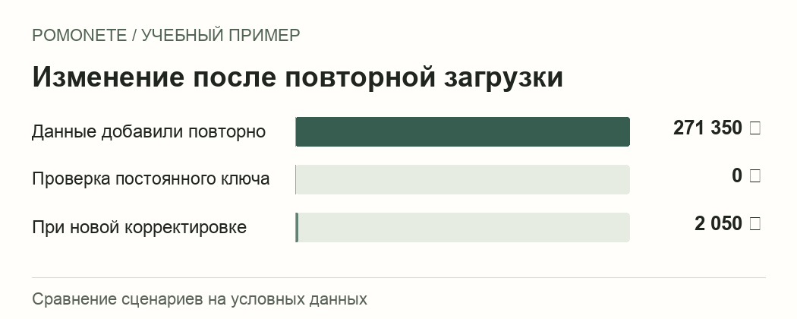

Почему выручка удвоилась после повторного импорта Яндекс Маркета
Проверка загрузки, при которой повторная обработка того же файла сохраняет итог.
У магазина Яндекс Маркета утренний импорт оборвался, и запустили его снова. Недельный результат оказался ровно в два раза больше. Похожая ошибка появляется, если загрузка дописывает каждую строку заново. Для аналитики селлера проверим, что неизменившийся источник даёт тот же результат.
Как выбрать постоянный идентификатор
Используйте ключ, который соответствует физическому событию. В таблице услуг отдельно различайте вид, строку товара и корректировку. Перед сохранением сравните несколько документов с одинаковыми суммами. Одного поля рубли для отбрасывания дублей недостаточно.
Чтобы пересобрать расчёт «Изменение после повторной загрузки» для своего магазина, перенесите в него исходные числа. В формуле A обозначает «итог после повторного импорта, ₽», B обозначает «итог после первой загрузки, ₽». Знак показывает направление разницы. Обе величины приводят к одному периоду и одной единице измерения до вычитания. Запишите рядом период и охват каждого среза. Если для одной строки известна только оценка, оставьте пояснение непосредственно рядом с ней: по итоговой цифре источник уже не восстановить.
Изменение после повторной загрузки = A − B
| Условие | Итог после повторного импорта, ₽ | Итог после первой загрузки, ₽ | Изменение после повторной загрузки |
|---|---|---|---|
| Данные добавили повторно | 542 700 | 271 350 | 271 350 ₽ |
| Проверка постоянного ключа | 271 350 | 271 350 | 0 ₽ |
| При новой корректировке | 273 400 | 271 350 | 2 050 ₽ |

В сценарии «Данные добавили повторно» в формулу подставляем итог после повторного импорта, ₽ = 542 700, итог после первой загрузки, ₽ = 271 350. Получается 271 350 ₽. Импорт создал второй набор строк с прежними ключами.
В сценарии «Проверка постоянного ключа» в формулу подставляем итог после повторного импорта, ₽ = 271 350, итог после первой загрузки, ₽ = 271 350. Получается 0 ₽. Та же выгрузка обновляет уже существующие записи, если данные совпадают.
В сценарии «При новой корректировке» в формулу подставляем итог после повторного импорта, ₽ = 273 400, итог после первой загрузки, ₽ = 271 350. Получается 2 050 ₽. Изменённая сумма привязана к конкретной записи и подтверждена новой версией.
Если «Данные добавили повторно» взять за исходную точку, «Проверка постоянного ключа» меняет показатель «изменение после повторной загрузки» на -271 350 ₽, а «При новой корректировке» на -269 300 ₽. Между двумя последними строками разница составляет 2 050 ₽ при вычитании второй из третьей. Смотрите, какой именно вход изменился между строками. Если менялись объём и условия одновременно, итог сравнения относится ко всему сочетанию.
При расчёте «изменение после повторной загрузки» оставляйте исходную точность, пока складываете значения и сверяете строки. В таблице видны 271 350 ₽, 0 ₽ и 2 050 ₽, уже округлённые для чтения. При суммировании многих периодов используйте исходные данные. Например, удельные результаты с разными знаменателями нужно пересобрать из числителей и соответствующих объёмов, а затем округлить. Пометьте, где округление применяется, чтобы при передаче отчёта речь шла об одних и тех же числах.
Почему нельзя удалять все совпадения по дате
За день могли пройти две операции одной стоимости. В некоторых случаях новая версия меняет исходную строку, в других приходит самостоятельная корректировка. Привяжите правило к источнику и сохраните момент его появления наравне со значением.
Воспроизводимость здесь начинается с критериев включения. Отметьте, чем «Данные добавили повторно» отличается от «При новой корректировке» и какие наблюдения будут отброшены в каждой строке. Как подтверждение используйте исходная выгрузка, журнал загрузок и контрольные суммы. У неполных записей выделите одну причину. Она покажет, какие цифры ещё стоит собирать и какой объём анализа потерян.
Перед обновлением отчёта сохраните источник, параметры запроса, время выгрузки и число строк на каждом шаге. Сначала проверяют ключ и единицу наблюдения, потом сравнивают итоговые суммы. Одно и то же значение в двух строках может быть законным: совпадение суммы само по себе слабо доказывает дубль. Подключив справочник, проверьте, какие записи не сопоставились, и разнесите их по причинам до пересчёта показателя.
Что сильнее всего меняет результат
Продолжим на базе «Проверка постоянного ключа» (0 ₽). Разложим расчёт на отдельные входы: «итог после повторного импорта, ₽», «итог после первой загрузки, ₽». Для удобства каждый опыт меняет одну величину примерно на десятую часть. Во всех остальных полях оставляем исходные числа. Для проверки более длинного периода шаги можно подобрать по фактическим колебаниям из истории.
- «Итог после повторного импорта, ₽» меняется с 271 350 на 298 485. При прежних остальных входах получается 27 135 ₽, сдвиг составляет 27 135 ₽.
- «Итог после первой загрузки, ₽» меняется с 271 350 на 298 485. При прежних остальных входах получается -27 135 ₽, сдвиг составляет -27 135 ₽.
Отметьте в рабочей таблице, что «итог после повторного импорта, ₽» показал сдвиг 27 135 ₽. Переведите эту величину в цену решения: проверьте, достаточно ли её для смены выбранного режима. Если решение остаётся тем же, ограничьтесь контролем на очередной дате. При перевороте вывода запросите уточнение исходного значения и повторите опыт.
Если период содержит несколько листов, проверьте границы между ними. Сумма может совпасть при двух ошибках с обратным знаком. Помимо общего итога сравните распределение по магазинам и видам услуг.
Что проверить перед запуском
На копии одного периода проведите одинаковый импорт дважды. Сравните число ключей и суммы. Затем добавьте одну подлинную корректировку и убедитесь, что выросла только ожидаемая позиция. Для потери связи сохраните ручной отчёт разницы.
При повторном импорте берите ту же исходную выборку и фиксируйте, какие записи действительно изменились. В стабильном отчёте сумма после второго прогона того же набора остаётся равной первой. Отложенные корректировки могут изменить поздний снимок, поэтому журнал версий пригодится для ответа на вопрос, когда возникло отличие. Дайте пользователю отчёта ссылку на строку, которую можно проверить вручную.
Чтобы отделить ошибку оценки от реального изменения, после следующего отчёта соберите «изменение после повторной загрузки» дважды. Сначала используйте исходное правило, затем замените только один предположенный вход фактическим. Так аналитика селлера Яндекс Маркета покажет, стоит ли тратить время на повторный замер или менять рабочую операцию. В итоговом отчёте сохраните обе даты проверки.